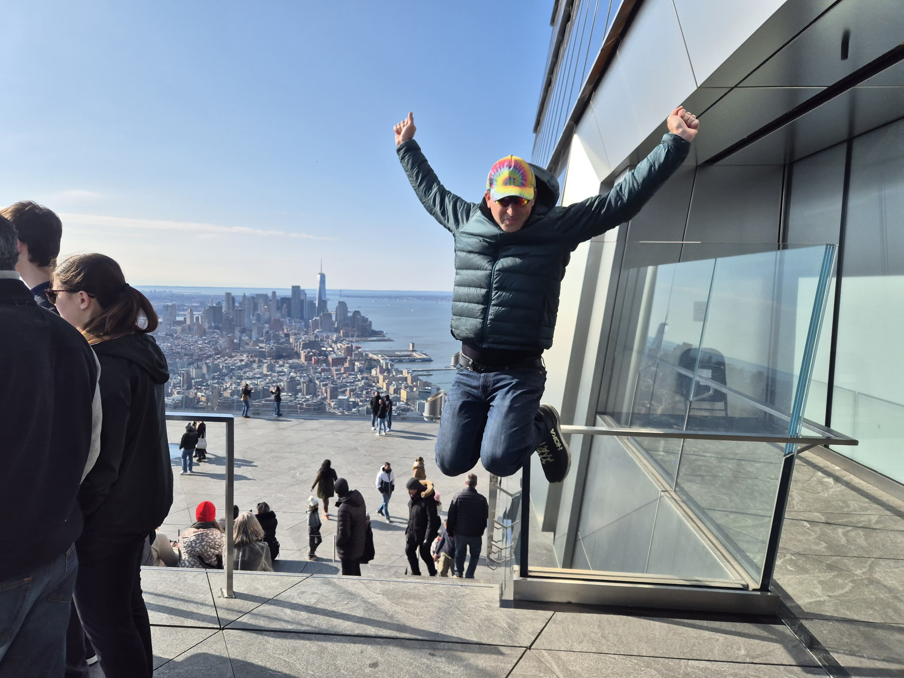
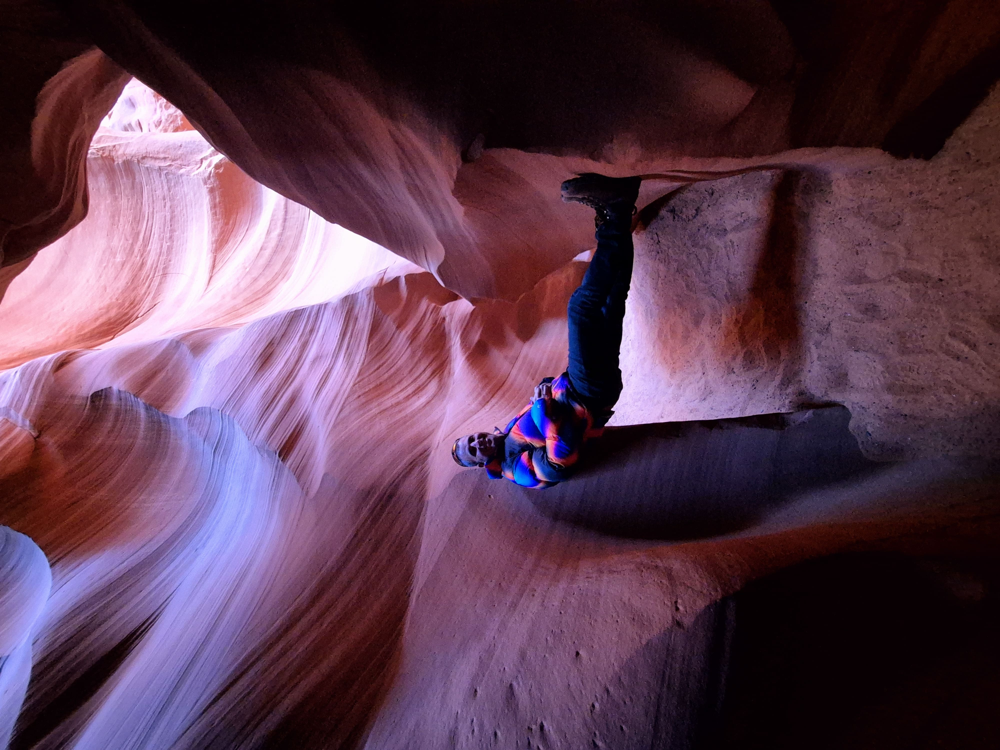
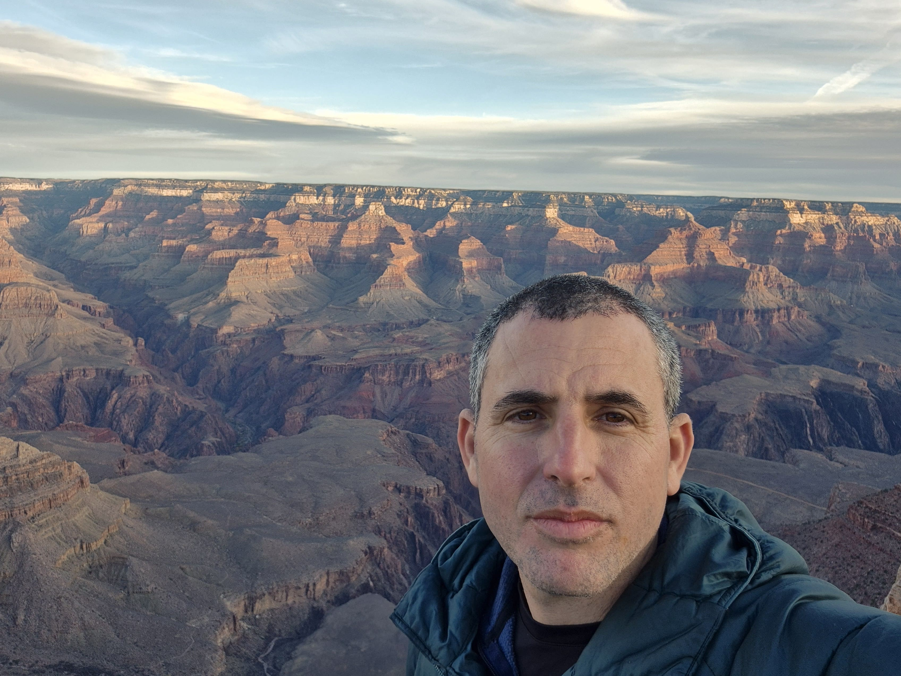

-
Life
The raw material: your limited time, attention, energy, relationships, ideas, and body.
-
Is
The urgency: not later, not after success, not when everything is perfect. Now.
-
For
The intention: spend life on purpose, like a smart designer of your own days.
-
Fun
The compass: personal fulfillment, defined by you, colored by your own tie-dye pattern.
motto.001
Use your life intelligently. Do not wait for someday.
“Life is for Fun” is my reminder that time is the most valuable material we have. Use it deliberately. Build, explore, love, learn, move, create, and choose experiences that make life feel truly yours.
It is not shallow fun. It is fulfillment. For one person that may mean adventure. For another, family, art, science, music, business, friendship, quiet, faith, or service. The point is to stop outsourcing joy to the future.
operating model
The smart-fun stack
Use time on purpose
Treat a day like a design problem. Put attention where it creates energy, meaning, growth, or connection.
Start before later
The future is not a waiting room. Make a small version of the life you want while today is still available.
Define your own fun
Fulfillment is personal. Your fun can be loud, calm, ambitious, spiritual, technical, social, or beautifully strange.
Keep it tie-dye
Many colors, one life. Tie-dye is the reminder that identity, creativity, and joy do not need to be uniform.
motion.002
The motto has a soundtrack.
LIFF is also a creative signal: music, video, experiments, and the company name behind the phrase. The point is simple: turn fulfillment into something visible, shareable, and alive.
> spend time like it matters
> define fun for yourself
> make today less postponed
Now playing: Creation Life is For Fun
loop: enabled
field.log
Evidence from the real world


